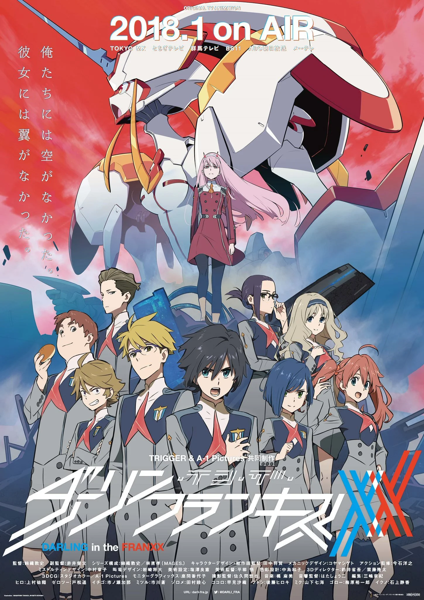
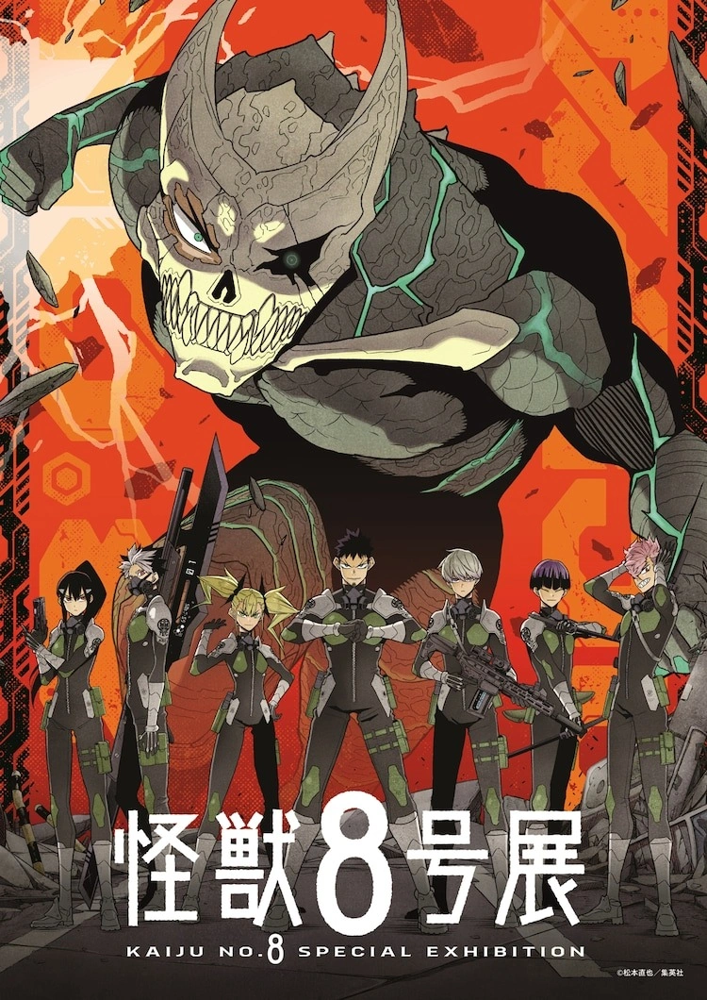
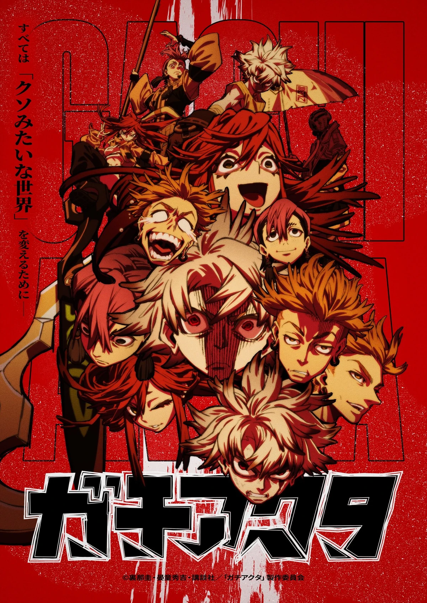

Action Anime
Big fights, high stakes, and characters who refuse to give up. If you want adrenaline, power-ups, and nonstop intensity, action is the move.
Jump to the lineupAction Anime Lineup
| Anime | Genres | Where to Watch | About the Story | Trailer |
|---|---|---|---|---|
|
 Darling in the Franxx |
Action, Sci-Fi, Mecha | Crunchyroll |
In a distant future, humanity survives behind massive walls while monsters called
Klaxosaurs threaten everything outside. To fight back, teens are trained to pilot
giant mechs known as Franxx — but they can only operate them in pairs, meaning trust
and teamwork are literally life-or-death.
Hiro, a former prodigy, has lost his confidence and purpose… until he meets Zero Two, a mysterious elite pilot with a dangerous reputation. Their partnership sparks rumors, jealousy, and nonstop conflict, but it also forces Hiro to confront who he is and what he’s willing to sacrifice. Main characters: Hiro, Zero Two, Ichigo If you like: Stranger Things or The Hunger Games, you’ll enjoy the mix of survival pressure, teamwork, and emotional character drama. |
|
 Solo Leveling
Solo Leveling
|
Action, Fantasy | Crunchyroll |
When portals to deadly dungeons begin appearing around the world, “Hunters” are the only
people strong enough to enter and survive. Sung Jinwoo is known as the weakest hunter —
constantly injured, underestimated, and barely scraping by.
After a brutal raid goes wrong, Jinwoo wakes up with a mysterious system that lets him level up like a video game — something no hunter should be able to do. As he grows stronger, he uncovers hidden threats behind the dungeons and realizes his new power comes with its own terrifying price. Main characters: Sung Jinwoo, Cha Hae-In, Yoo Jinho If you like: John Wick or The Witcher, you’ll love watching a main character go from underestimated to unstoppable. |
|
|
 Kaiju No. 8 |
Action, Sci-Fi | Crunchyroll |
In Japan, giant monsters called Kaiju attack cities without warning, and the Defense Force
is responsible for taking them down. Kafka Hibino works in kaiju cleanup — the job that deals
with the aftermath — but he’s always dreamed of fighting on the front lines.
Just when he’s ready to give up, Kafka gains the ability to transform into a kaiju himself. Now he has to hide his identity, control his power, and prove he can fight for humanity without becoming the thing everyone fears. Main characters: Kafka Hibino, Mina Ashiro, Reno Ichikawa If you like: Pacific Rim or Godzilla, you’ll enjoy huge monster battles, squads, and big “save the city” moments. |
|
|
 Gachiakuta |
Action, Fantasy | Crunchyroll |
Rudo lives on the edge of society, looked down on for where he comes from and what people
assume about him. When he’s falsely accused and thrown into a massive “pit” beneath the city,
he enters a brutal world built out of waste, monsters, and people who had to get dangerous to survive.
In the pit, Rudo discovers that discarded objects can carry power — and that the world above is far more corrupt than he ever realized. To survive and get revenge, he’ll have to fight smarter, get stronger, and decide what kind of person he wants to become. Main characters: Rudo If you like: The Walking Dead or Mad Max: Fury Road, you’ll enjoy the gritty survival energy and revenge-driven story. |